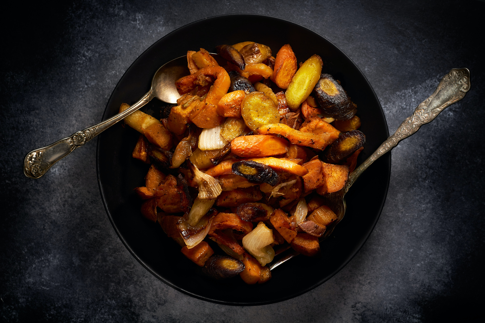

Roasted Veggies

Roasted vegetables for the lazy nights
Roasted Vegetables are an easy to make dish that is very versatile. You can make it with about 10-20 minutes of preparation and only takes about 25 minutes to cook! Since you can switch out the types of vegetables, you can make the dish several times and find the vegetable combination that works for you!
There are some key ingredients you will need but don't be afraid to try some variations on what else you want to add! The necessary ingredients are olive oil, salt, pepper and dried thyme. Beyond that you can add something to spice it up like paprika, red chili powder or gochujang powder. Or you can go a more savory route, adding some pre-made italian herb mix, dried oregano or garlic or ginger powder!
Ingredients
Here are the ingredients you need:
- Salt (any cooking salt is fine: sea salt, table salt, kosher salt)
- Black or White Pepper
- Olive Oil
- Dried Thyme (optionally crushed with your fingers or kept whole)
Here is the equipment you'll need
- 1 large bowl for mixing the ingredients
- Cutting board and Knife.*
- Preheated oven set to bake at 400 Degrees F
- shallow baking pan. If you're making a large amount, you may need multiple.**
- A metal spatula or large spoon
* A sharp knife will help reduce strain if you are cutting a large amount of vegetables. Look up quick knife honing techniques on youtube to temporarily sharpen your knife.
** A deep baking pan will also work, but your vegetables may end up more soggy than it would on a shallow one.If that is the case, I would suggest heating at 425, and removing the vegetables to mix/turn in step 6 every 5 minutes or so instead of once every 10 minutes.
And here are the list of vegetables you can use. Feel free to mix and match and choose what you like! For each of these try to keep them around 2-3cm cubed size. This way the vegetables are not too big that they'll cook slow, and not so small that they'll get turned to crisp as they are baking. Also by keeping it this size, you should have a fairly good cook on all the vegetables without worrying that one of them is underdone.
- Potatoes or Sweet Potatoes
- Mushrooms
- Carrots or Baby Carrots
- Beets
- Sweet Peppers
- Zucchini
- Brussels Sprouts
- Onions
- Cauliflower
- Broccoli
Steps
Here is the list of steps to prepare this dish
- If you haven't already, pre-heat the oven to 400 Degrees F on the bake setting.
- Cut your vegetables of choice to the appropriate size, and place them into a large bowl. Give the bowl a shake and mix the vegetables around.
- Into the bowl of cut vegetables, about half a regular size spoon of salt and pepper for every fistful size of vegetables you have prepared. (if you think it's too much, then add less. It's not a problem to add salt after cooking the vegetables if you feel you undershot the amount). And about half as much dried thyme, either as whole or crush the thyme with your fingers. At this pint you can add your additional spices and powders too. If you're unsure of how the spices will taste, just have a small taste. It's safe to eat most culinary powders, and this will give you an idea of the type of flavour it would add. Once you've found a flavour you like, you can add more when you make the dish again.
- Spread a regular sizes spoon amount of olive oil for every fistful of vegetables you have prepared and mix the vegetables again
- Add a regular sized spoonful of olive oil to the baking tray and spread is crudely around the pan with your finger or by tilting the pan around. You don't need an even coat, but this will just help your vegetables be removed easier after baking.
- Spread the vegetables on your baking sheet. Try not to overcrowd the sheet. Doing so will lead to more soggy vegetables since the water retained in the vegetables will 'steam' the items beside it. If possible, use multiple sheets. I usually just pour the veggies on the pan, and shake the sheet back and forth a bit until the vegetables are kind of spaced apart.
- Place the sheet in the oven and set a timer for 10-12 minutes. I personally have not found too big of a difference baking on different heights in the oven. With the bake setting, the heat comes from the bottom of the oven, so your vegetables will probably cook faster the lower it is in the oven.
- When the timer ends, use oven mitts and remove the tray from the oven and place it somewhere heat resistant (on your oven top if it's clear of clutter!). Now take your spatula or spoon and lightly move the vegetables around, trying to turn some over in the process or removing it from it's current spot. Giving the tray a shake might also work. This step just helps the other sides of the vegetable pieces get cooked and stops the vegetables from burning on the spot. Place the tray back in the oven and set a timer for 10-12 minutes.
- When the timer is up, remove the tray partially from the oven, and use a fork to poke the thickest piece of vegetable you have. It should go in fairly effortlessly, especially for some of the dense vegetables like potatoes or carrots. If they are still hard, give the sheet a bit of a shake again, and place it back in the oven. Now check the oven every 3-5 minutes or so until the vegetable is cooked.
- Once the vegetables seem cooked, remove them from the oven. Wait for the vegetables to cool down a bit, and give it a taste. If you think they need more salt, sprinkle a small amount over the sheet and lightly mix. Additional pepper can be added at this step as well
- Serve and Enjoy!